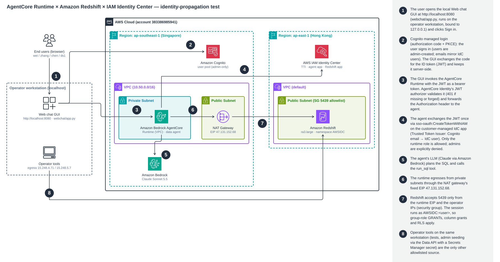
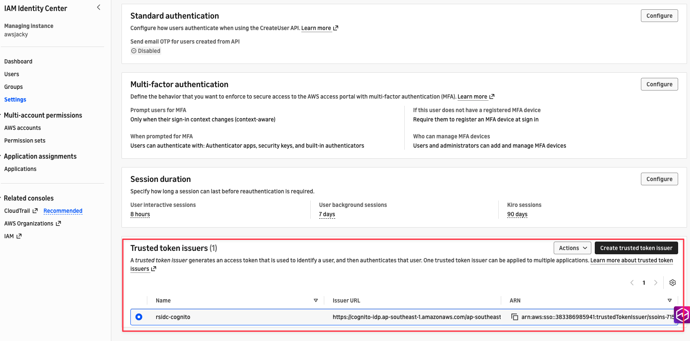
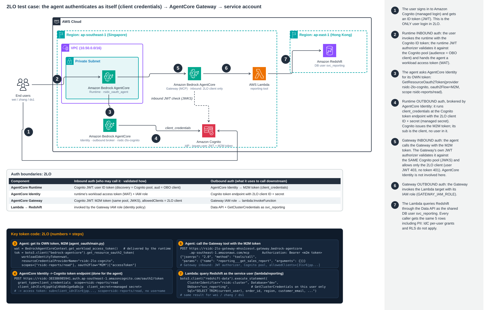
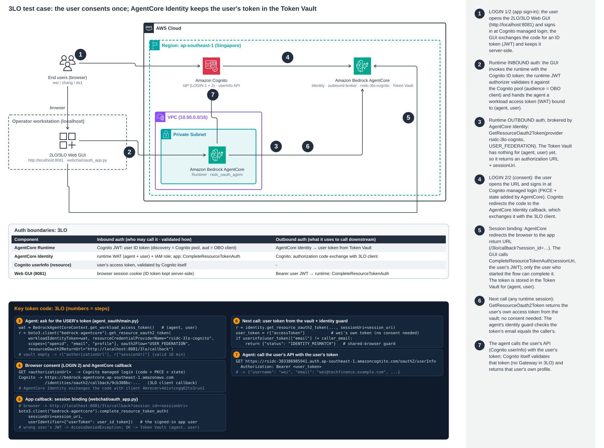

To: [colleague@amazon.com]
Cc: [optional]
Subject: [Test results] AgentCore Identity patterns on Redshift: OBO enforces IdC per-user access; 2LO / 3LO compared
Attach: architecture.svg, architecture-2lo.svg, architecture-3lo.svg, RUNBOOK.md, tests/results-*.txt
Hi [Name],
I tested whether an Amazon Bedrock AgentCore Runtime agent that queries and updates Amazon Redshift respects
the access control that Redshift gets from AWS IAM Identity Center (IdC). In short, it does, as long as the agent propagates the
caller's identity rather than using a service credential. Below are the architecture, setup, test steps, results, and a few gotchas worth knowing
before we recommend this pattern to customers.
TL;DR
- Every agent query runs in Redshift as the real IdC user (
AWSIDC:wei@…), so Redshift grants, column-level grants and RLS
defined for IdC groups apply unchanged. 16/16 allow/deny cases matched expectations.
- The agent's IAM role has no Redshift permissions. Without a user's token it cannot reach the data at all. Prompt injection could not escalate privileges, because Redshift still denied the statements.
- The network is locked down: Redshift accepts 5439 only from the runtime's NAT EIP and the operator IPs. I verified this with Redshift's connection log and a revoke/restore test.
- AgentCore Identity pattern: this validates On-Behalf-Of (OBO), with the token exchange done through IAM Identity Center trusted identity propagation. It is not 2LO, 3LO or SigV4-to-data. Details in section 1.1.
- 2LO and 3LO were tested too (Part 2, separate runtime; OBO unchanged and re-verified at 16/16). With 2LO every user, including one with no grants, sees all rows and PII, because Redshift only sees a service user. With 3LO, Token Vault isolation and session binding work, but I found a shared-browser risk; an agent-side identity check fixes it. 18/18 cases passed.
- Two gotchas: external JWTs are single-use at IdC, and an Allow-only IdC app ActorPolicy does not stop same-account admins. Fixes are below.
1. Test architecture

The IdC instance lives in ap-east-1, where AgentCore is not available. The runtime therefore runs in ap-southeast-1 (the nearest region with AgentCore) and reaches Redshift in
ap-east-1 through a NAT Gateway with a fixed Elastic IP. AgentCore Gateway was not needed because the agent calls Redshift directly with the user's token, which keeps the identity chain to one hop.
Identity flow: user's browser → local Web chat GUI (http://localhost:8080) → Cognito managed login (auth code + PKCE) → Cognito ID token (JWT, kept server-side by the GUI) → AgentCore Identity inbound JWT authorizer → agent → sso-oauth:CreateTokenWithIAM
(IdC customer-managed app, Trusted Token Issuer maps the Cognito email to the IdC user) → IdC access token → Redshift
(token_type=ACCESS_TOKEN) → session user AWSIDC:<email> with roles AWSIDC:<group>.
1.1 Which AgentCore Identity pattern does this test validate?
Mapped against the four patterns in the AgentCore Identity Deep Dive deck (SigV4, 2LO, 3LO, OBO), this test validates
On-Behalf-Of (OBO), the token-exchange pattern:
| Pattern | Used? | How it shows up in this test |
|---|
| OBO (token exchange) | Yes, core | The agent already holds the user's token (Cognito JWT) and exchanges it, with no extra user consent, for a downstream token scoped to Redshift: an IdC access token with scope redshift:connect, via CreateTokenWithIAM using the jwt-bearer grant (RFC 7523). The downstream service (Redshift) then enforces its own per-user policies (grants, column grants, RLS). Each session exchanges once; no Token Vault, no refresh token. These are exactly the OBO traits on the deck's OBO slide: "downstream enforces per-user access, requires JWT inbound". |
| Inbound JWT (Agent Authorizer) | Yes | AgentCore Identity's customJWTAuthorizer validates the Cognito JWT before the agent runs (401 on missing or forged tokens). OBO requires JWT inbound; SigV4 inbound would lose the user. |
| SigV4 (execution role) | Supporting only | The runtime role only authenticates the exchange call (CreateTokenWithIAM is an IAM-signed API, restricted by the IdC app ActorPolicy) and calls Bedrock. It has no Redshift permission, so data access never runs as the agent itself. |
| 2LO (client credentials) | Separate test (§5) | The OBO agent never authenticates to Redshift as itself. Section 5 shows what happens when it does (a service account). |
| 3LO (auth code + consent) | Separate test (§5) | The OBO flow has no browser consent and no stored resource token. Section 5 exercises 3LO with the Token Vault and session binding. |
Difference from the deck's OBO flow:
- Who does the exchange. In the deck, AgentCore Identity's Credential Provider (using the agent access token, WAT) or a Gateway target with
grantType: TOKEN_EXCHANGE performs it against the downstream IdP. Here the downstream IdP is IAM Identity Center, whose exchange (CreateTokenWithIAM) is an IAM-authenticated AWS API rather than a standard OAuth token endpoint. So the agent code performs it with its execution role, and the WAT, Credential Provider and Token Vault are not used. Whether the Credential Provider or Gateway can drive this natively is worth confirming with the service team.
- What the downstream token carries. The deck's OBO token carries both user and agent identity. Here Redshift sees the user (
AWSIDC:<email>). The agent's identity is the IdC application that requested the token, and CloudTrail records the runtime role's exchange call.
- Why forwarding fails. Our first attempt simply forwarded the user's JWT to Redshift (
EXT_JWT) and broke on the second connection, because IdC treats a JWT as single-use. This is why OBO's audience-scoped downstream token, rather than a forwarded JWT, is the right pattern.
2. Setup
| Component | Configuration |
|---|
| IAM Identity Center (existing) | ssoins-715869a9a6444dc5, ap-east-1. Groups risk-team, marketing-team, platform-team, data-scientists. A Trusted Token Issuer trusts Cognito and maps email → emails.value. |
| Web chat GUI | webchat/app.py on the operator workstation, bound to 127.0.0.1 only (http://localhost:8080). Sign in goes to Cognito managed login (authorization code + PKCE, callback http://localhost:8080/callback). The ID token stays server-side and is sent to the runtime as the bearer token. Users switch with sign out; a CLI alternative is tests/chat.py. |
| Amazon Cognito | User pool in ap-southeast-1, admin-create-only (self sign-up disabled). Four test users whose emails mirror IdC users. Public app client. |
| Redshift IdC application | Namespace AWSIDC, authorized token issuer = Cognito TTI (audience = app client). Four groups assigned; data-engineers deliberately left out. |
IdC customer-managed app rsidc-data-agent | jwt-bearer grant (Cognito TTI), scope redshift:connect, assignment required. ActorPolicy allows only the runtime role and explicitly denies everyone else. |
| Amazon Redshift | ra3.large single node, encrypted, admin password managed by Secrets Manager, IdC app attached. Publicly addressable, but the SG allows 5439 only from 3 × /32 (runtime EIP + 2 operator egress IPs) and has no egress rules. |
| AgentCore Runtime | Python 3.12 direct code deploy (Strands Agents + Claude Sonnet 5.5 on Bedrock). VPC mode (private subnets → NAT GW, EIP 47.131.152.68). Inbound auth: customJWTAuthorizer (Cognito discovery URL, audience = client id). Authorization header forwarded to the agent. |
| Runtime execution role | Bedrock InvokeModel, logs/X-Ray, and sso-oauth:CreateTokenWithIAM on the one IdC app. No redshift:*. |
2.1 Trusted Token Issuer: "IdC trusts JWTs issued by Cognito"
IAM Identity Center does not sign users in here; Cognito does. The Trusted Token Issuer (TTI) tells IdC that a JWT signed by this Cognito user pool is acceptable proof of who the user is, and how to find the matching IdC user. It is configured once on the IdC instance (Settings → Authentication → Trusted token issuers):

| TTI setting (rsidc-cognito) | Value and meaning |
|---|
| Type / Issuer URL | OIDC_JWT · https://cognito-idp.ap-southeast-1.amazonaws.com/ap-southeast-1_kSVpAo5yl. The token's iss must equal this |
| JWKS retrieval | OPEN_ID_DISCOVERY: IdC fetches Cognito's signing keys via the discovery document and verifies the signature |
| Claim → identity store attribute | email → emails.value: the JWT's email must match exactly one IdC user |
| Applications that trust it | rsidc-redshift (AuthorizedTokenIssuerList) and rsidc-data-agent (jwt-bearer grant). Each accepts only audience kff7mg63m7d94n6f2euip41na (the OBO Cognito client) |
At exchange time IdC checks, in order:
- The issuer matches and the signature is valid.
aud is authorized for that application.- The token is not expired and has not been redeemed before (single use).
email matches exactly one IdC user. Example: Cognito wei → wei@techfinance.example.com → IdC user wei → Redshift AWSIDC:wei@techfinance.example.com.- The user's groups are assigned to the application.
Because email is the mapping key, Cognito users must be admin-created with verified emails; self sign-up is disabled.
Redshift permission model under test (grants only to IdC group roles, never to individual users):
| IdC group (persona) | sales.orders | marketing.campaigns | risk.credit_limits |
|---|
| risk-team (wei) | SELECT, all rows | ✗ | SELECT / INSERT / UPDATE |
| marketing-team (zhang) | SELECT non-PII columns only; RLS: APAC rows only | SELECT / UPDATE | ✗ |
| platform-team (chen) | SELECT | SELECT | SELECT (read-only) |
| data-scientists (ds1) | ✗ (signed in, but no grants) | ✗ | ✗ |
2.2 Data in Redshift and who can see it (snapshot 2026-10-05)
Cluster rsidc-cluster (ap-east-1) → database dev → 3 user tables, 9 rows. Full data, read as the admin (bypasses RLS):
dev.marketing.campaigns
| campaign_id | name | budget | status |
|---|
| 1 | Mid-Autumn Promo | 50004.00 | ACTIVE |
| 2 | Double 11 | 120000.00 | PLANNED |
dev.risk.credit_limits
| customer_email | credit_limit | risk_score |
|---|
| alice@cust.example | 10000.00 | 724 |
| carol@cust.example | 5000.00 | 640 |
dev.sales.orders
| order_id | region | customer_email | amount | order_date |
|---|
| 1 | APAC | alice@cust.example | 1200.00 | 2026-09-01 |
| 2 | APAC | bob@cust.example | 560.50 | 2026-09-03 |
| 3 | EMEA | carol@cust.example | 980.00 | 2026-09-05 |
| 4 | AMER | dave@cust.example | 2300.00 | 2026-09-07 |
| 5 | EMEA | erin@cust.example | 150.25 | 2026-09-09 |
What each persona actually gets back. The same SELECT *, run through the OBO agent as that user, gives this Redshift output:
| Persona (IdC group) | Redshift session user | marketing.campaigns | risk.credit_limits | sales.orders |
|---|
| wei (risk-team) | AWSIDC:wei@techfinance.example.com | ✗ permission denied for schema marketing | 2/2 rows | 5/5 rows |
| zhang (marketing-team) | AWSIDC:zhang@techfinance.example.com | 2/2 rows | ✗ permission denied for schema risk | 2/5 rows, columns: order_id, region, amount, order_date (hidden: customer_email) |
| chen (platform-team) | AWSIDC:chen@techfinance.example.com | 2/2 rows | 2/2 rows | 5/5 rows |
| ds1 (data-scientists) | AWSIDC:tojackywu@gmail.com | ✗ permission denied for schema marketing | ✗ permission denied for schema risk | ✗ permission denied for schema sales |
zhang: SELECT * FROM sales.orders. RLS keeps only APAC rows, and the column grant silently drops customer_email from SELECT *; naming the column explicitly returns 42501 permission denied.
| order_id | region | amount | order_date |
|---|
| 1 | APAC | 1200.00 | 2026-09-01 |
| 2 | APAC | 560.50 | 2026-09-03 |
3. Test steps
Everything is scripted and idempotent (infra/01…08). The full commands and the real output of each step are in the attached RUNBOOK.md.
- Create the runtime VPC with private subnets and a NAT Gateway with a fixed EIP (ap-southeast-1).
- Create the Cognito user pool (admin-only) and four users mirroring IdC emails.
- Create the IdC Trusted Token Issuer and the Redshift IdC application (
AWSIDC), then assign groups.
- Create the Redshift cluster, with the SG restricted to the runtime EIP and the operator IPs.
- Seed the tables, create the
AWSIDC:<group> roles, grants, column grant and RLS policies (admin via the Data API).
- Create the runtime execution role (no Redshift permissions).
- Create the IdC customer-managed app for the agent's token exchange, with an explicit-Deny ActorPolicy.
- Deploy the agent to AgentCore Runtime (VPC mode, JWT authorizer, header forwarding).
- Run the access-control matrix through the runtime: each persona signs in once and uses one runtime session.
- Run the negative, security and network tests.
4. Results
4.1 Access-control matrix through the agent: 16 / 16 passed. A DENY counts as a pass only when Redshift itself
returns 42501 permission denied. Connection failures count as test failures.
| User | Case | Expected | Actual | Evidence |
|---|
| wei | whoami | ALLOW | ALLOW | AWSIDC:wei@techfinance.example.com |
| wei | read risk | ALLOW | ALLOW | 2 rows |
| wei | update risk | ALLOW | ALLOW | rowcount = 1 |
| wei | read sales (all regions) | ALLOW | ALLOW | 5 rows |
| wei | read marketing | DENY | DENY | permission denied for schema marketing |
| zhang | update marketing | ALLOW | ALLOW | rowcount = 1 |
| zhang | sales non-PII columns | ALLOW | ALLOW | 2 of 5 rows (RLS: APAC only) |
| zhang | sales PII column | DENY | DENY | permission denied for relation orders (column grant) |
| zhang | read risk | DENY | DENY | permission denied for schema risk |
| chen | read risk / sales | ALLOW | ALLOW | 2 rows / 5 rows |
| chen | update risk (read-only team) | DENY | DENY | permission denied for relation credit_limits |
| chen | GRANT escalation attempt | DENY | DENY | permission denied for relation campaigns |
| ds1 | whoami / read sales | ALLOW / DENY | ALLOW / DENY | authenticated ≠ authorized: permission denied for schema sales |
The whoami cases for zhang, chen and ds1 also passed; they are folded into the rows above for brevity.
4.2 Negative, security and network tests
| # | Test | Result |
|---|
| N1 | Invoke runtime with no Authorization header | HTTP 401 Missing Authentication Token (AgentCore Identity) |
| N2 | Forged JWT (zhang's token, email changed to chen) | HTTP 401 Invalid Signature for bearerToken |
| N3 | Same JWT reused in a new runtime session | InvalidGrantException: JWT is already redeemed |
| N4 | LLM mode: zhang asks for customer emails; then a prompt injection asking it to GRANT | The agent returned only APAC rows without the PII column and refused the GRANT. Redshift denied the read (42501). |
| NET1 | Source IPs Redshift logged for AWSIDC:* users | Only 47.131.152.68 (runtime) and 15.248.4.71 (operator) |
| NET3/4 | Revoke the operator SG rules | Operator 5439 timed out; the runtime still worked (HTTP 200). Rules restored. |
| X1 | Admin IAM user exchanges a user's JWT via the IdC app | Before the fix: succeeded. After the explicit Deny: AccessDenied. |
5. Part 2: 2LO and 3LO test cases
To compare the other AgentCore Identity outbound patterns, I added a separate runtime (rsidc_oauth_agent), so the OBO runtime and its tests were not touched. After Part 2 the OBO matrix still passes 16/16 and the OBO runtime is still at version 3.
2LO architecture: the agent authenticates as itself (client credentials) → AgentCore Gateway → Redshift service user.

3LO architecture: the user consents once; AgentCore Identity keeps the user's token in the Token Vault (session binding by the app).

Who authenticates what (2LO / 3LO). Both the runtime and the Gateway have inbound JWT authorizers that trust Cognito:
- Runtime: the user's ID token, audience = OBO client.
- Gateway: the M2M access token, allowedClients = 2LO client.
- AgentCore Identity is the runtime's outbound broker. It fetches tokens from Cognito (M2M, or the user's token from the Token Vault). The Gateway doesn't trust AgentCore Identity; it validates the Cognito-issued token against Cognito's JWKS.
- Gateway outbound: its IAM role invokes the Lambda.
- 3LO: there is no Gateway; Cognito
userInfo validates the user's token itself.
5.1 Setup
| Component | Configuration |
|---|
| Cognito (same pool) | New hosted login domain (managed login v2), resource server rsidc-reports/read, and two confidential clients: rsidc-2lo-agent (client_credentials) and rsidc-3lo-agent (authorization code). The OBO client is unchanged. |
| AgentCore Identity | Two CustomOauth2 credential providers: rsidc-2lo-cognito (M2M) and rsidc-3lo-cognito (USER_FEDERATION). The client secrets are held by AgentCore Identity. The OAuth runtime's workload identity allows a single 3LO return URL. |
| AgentCore Gateway (2LO) | MCP gateway with JWT inbound that allows only the 2LO client. Lambda target get_sales_report, invoked through the Gateway IAM role. |
| Lambda → Redshift | Redshift Data API as the shared DB user svc_reporting (SELECT on all of sales.orders); GetClusterCredentials is scoped to that one user. |
| OAuth agent runtime | Same Cognito JWT inbound auth and VPC. Its role can only call GetResourceOauth2Token on the two providers. It has no Redshift, IdC or LLM access. A 3LO identity guard refuses if the vault token's email ≠ the caller's email. |
5.2 Test steps (infra/09…12, tests/oauth_tests.py):
- Add the Cognito domain, resource server and the 2LO/3LO clients.
- Create the credential providers and point the 3LO client's callback at AgentCore Identity.
- Create
svc_reporting, the reporting Lambda and the 2LO Gateway.
- Deploy the OAuth runtime and allowlist the 3LO return URL on its workload identity.
- 2LO: each persona invokes the agent; the agent gets its own M2M token and calls the Gateway tool. Also call the Gateway directly with no token and with a user token.
- 3LO: the first call returns a consent URL. A headless browser signs the user in at Cognito; the app callback calls
CompleteResourceTokenAuth with the user's JWT; the next call (a new runtime session) returns the token from the vault, and the agent calls userInfo. Negative cases: another user, a reused session, a shared browser, and prompt=login. Vault-state cases use admin-created throwaway users.
5.3 Results: 18 / 18 asserted cases passed, plus 1 documented observation
| Case | Expected | Actual / evidence |
|---|
| 2LO as wei, zhang, ds1 via Gateway | agent identity | All three get the same 5 rows including customer_email; Redshift user = svc_reporting; token sub = 2LO client id (no user) |
| 2LO Gateway called with no token / with a user's ID token | reject | 401 / 403 (allowedClients = 2LO client only) |
| 3LO first call (wei) | consent | CONSENT_REQUIRED (authorizationUrl + sessionUri) |
| 3LO consent + CompleteResourceTokenAuth (wei) | OK | OK. The next call returns TOKEN_FROM_VAULT; userInfo username = wei |
| 3LO zhang calls after wei consented | no reuse | CONSENT_REQUIRED; the vault is keyed by (agent, user) |
| 3LO zhang's session completed with wei's JWT | reject | AccessDeniedException (session binding) |
| 3LO zhang / wei afterwards | own tokens | Each user gets their own token; no cross-user overwrite |
| 3LO shared browser: A's consent URL opened in a browser signed in to Cognito as wei | guard blocks | No login form was shown, so wei's token was stored for A. The agent guard returned IDENTITY_MISMATCH |
| 3LO recovery: forced re-consent by A in a clean browser | A's token | TOKEN_FROM_VAULT, username = A |
3LO prompt=login in the shared browser | login form | The login form is shown (managed login v2; classic v1 ignores it) |
Observed: token stored after a prompt=login consent (sent via customParameters) | token | Not stored (CONSENT_REQUIRED), although the same flow without it works. To raise with the service team |
5.4 Same data, three patterns
| Pattern | Identity reaching the resource | zhang (marketing) | ds1 (no grants) | Use for |
|---|
| OBO | end user (AWSIDC:zhang@…) | 2 APAC rows, PII denied | denied | per-user data in internal systems (Redshift + IdC) |
| 2LO | the agent / service (svc_reporting) | 5 rows + PII | 5 rows + PII | data every caller may see; batch / system jobs |
| 3LO | end user at the resource's IdP | own profile only | own profile only | user-owned SaaS data (Google, Slack, Salesforce…) needing consent |
6. Findings and recommendations
- Redshift enforces the access control, not the agent. IdC groups surface as
AWSIDC:<group> roles, so existing grants and RLS apply to agent traffic exactly as they do to direct users.
- External JWTs are single-use at IdC (jti replay protection). Passing the JWT straight to Redshift (
EXT_JWT) fails on the second connection. Recommended pattern: the agent exchanges it once via CreateTokenWithIAM and reuses the IdC access token (about 1 hour) inside the session. A new session needs a fresh or refreshed user token.
- An Allow-only IdC app ActorPolicy is not a boundary against same-account admins. Add an explicit Deny for all principals except the agent role, and ideally an SCP.
- Authenticated ≠ authorized. App assignment controls who can sign in; Redshift grants control what they can see.
- Column grants silently trim
SELECT *. zhang's SELECT * on sales.orders returned 4 columns with no error; customer_email was simply omitted. Only naming the column explicitly is denied. Tell agent and report builders, because "no error" does not mean "all columns".
- Metadata is visible by default. Users can list tables they cannot read. Enable Redshift metadata security if table names are sensitive.
- Network: keep Redshift reachable only from known egress IPs. Corporate networks can egress different ports via different IPs, so detect the IP actually used for 5439.
- 2LO bypasses per-user data controls by design. Even a user with no grants saw PII through the service account. Use 2LO only for data every caller may see, and authorize at the tool level (Gateway allowedClients and scopes).
- 3LO shared-browser risk. Session binding checks the app user, not the account the browser signed in with at the IdP. Add an agent-side check that the vault token's subject matches the caller (verified here), and offer a forced re-consent to recover.
prompt=login via customParameters shows the login form but led to no stored token. Confirm with the AgentCore Identity team before relying on it. It also needs Cognito managed login v2.- The Data API is an IAM path, not a network path. The security group does not govern it. Scope
GetClusterCredentials to a single DB user and consider VPC-endpoint or IP conditions.
7. Cost and cleanup
About USD 0.72/hour while running (Redshift ra3.large ≈ 0.65, NAT ≈ 0.065; AgentCore Runtime, Gateway, Lambda, Bedrock and Cognito are negligible at test volume).
infra/99-teardown.sh removes everything, including the Redshift cluster with no final snapshot. It does not touch the existing IdC instance, users or groups.
Happy to walk you through it or run it in a customer account. The scripts and RUNBOOK are in
agentcore-identity-for-gateway/, and I can share them.
Appendix A. AWS console screenshots (one per setup step)
Captured from my logged-in console session (account 383386985941). Each figure shows the exact URL at capture time so you can open it and validate. Steps 5 (SQL seed) and 13 (tests) have no console page; see sections 2.2 and 4.
Thanks,
[Your name]